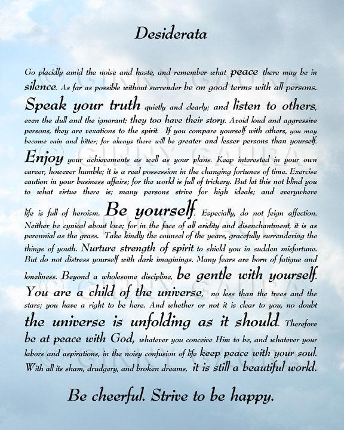

To me self-awareness is the most important value to take care of because all other good values seem to flow from this.
Self-Knowledge or self-awareness is a trait or value that I think is so important. You need to know yourself before you can do anything. Before you can give your best self to the world I think you need to look inwards and mull over what do you naturally deem to be important in life. Because that gives you your compass to navigate through this chaotic world. I think if one is to be happy/fulfilled and successful they need an honest procure of what is going on before they can begin working towards a goal, they need to be self-aware.
The last time somone asked me for advice was my brother asking for relationship advice with his girl friend. And the advice I gave him was based on that value of self-awareness, which I think should act as your moral compass. I think you can’t be wrong if you make a decision in a relationship that is based on how you feel. Whether that be to break up or to continue going out with a person. You need to be self-aware; so that you can know the answer to important questions like does this person make me happy and make me grow as an individual. Is this person a more negative or positive influence at a certain point in my life. All my advice was centered around knowing yourself first before making any decisions, you need to figure out what you really want. And what you really want comes from self-examination or self-awareness.
I don’t think I suffer to much from stereotype threat, because I don’t think that I belong to any groups with majorly negative connotations. I actually do think about my values quite a bit though, or I have at least put some prior thought especially this summer into thinking about what do I really think is important when you strip away everything in life down to the essentials. And I found that really since I am going to die one day I might as well have as fun and fulfilling ride as possible. And if I am feeling good or bad, it’d always important at any point to be able to do some deceptive work on your own emotions. Be your own Sherlock Holmes who can see some clues (you’re feeling down for a mysterious reason) and then your emotional Sherlock Holmes should begin solving the mystery if your lucky.
Whenever I feel down though I often read this poem called Desideratta, I have it hanging up in my room at home. This poem is like someone managed to transcribe what my inner voice has been telling me my whole life, and on top of that there is some great advice that sometimes I need reminding of too.
This moral life philosophy above combined with meditation, (yoga every know and then), good friends, family and an optimistic world view underlying regular self introspection is what keeps me happy though!